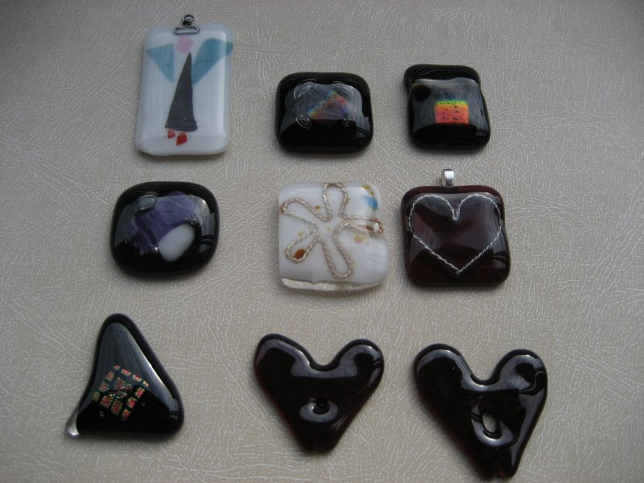

Henriikka Niemenmaan koruja

Foto: Henriikka Niemimaa
Mallit ovat tekij‰noikeuden suojaamia.
Niit‰ ei saa kopioida myyntiin.
Enkelikoru on n. 5 cm korkea. leikattu hiutaleista (confetti)
ja sulatettu kirkkaan p‰‰lilasin alle. Ripustuslenkist‰ muodostettu s‰dekeh‰ on kiva detalji
Sen vieress‰ on dikro-lasisia koruja. Dikron hohto ei oikein tule esiin kuvissa.
Keskirivin oikeanpuoleisissa on laminoitu hopealankaa p‰‰lilasin alle.
Siin‰ on k‰ytetty hienohopeaa, sterling-hopea v‰rj‰‰ lasia helpommin.
Alarivin syd‰miin on tehty rei‰t ripustusta varten jo ennen sulatusta.
Itse asiassa korut on syv‰fuusattu palasista rei‰n ymp‰rille.